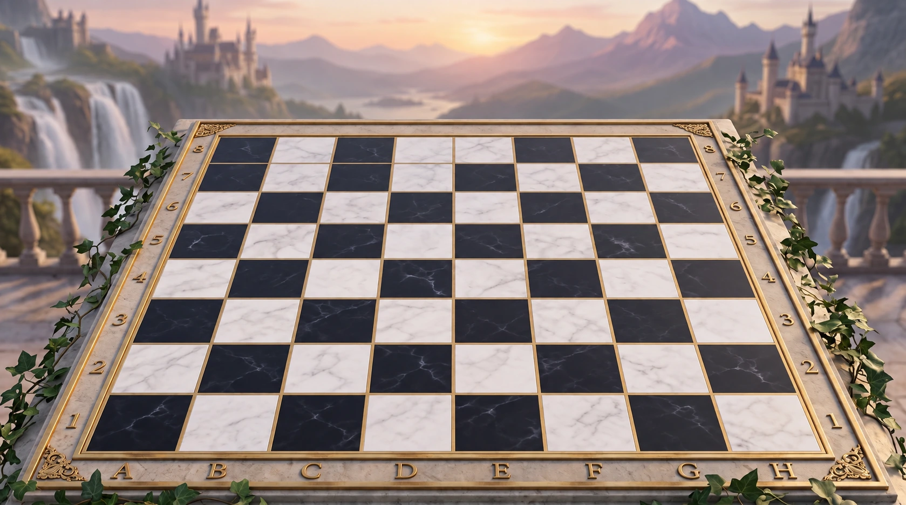
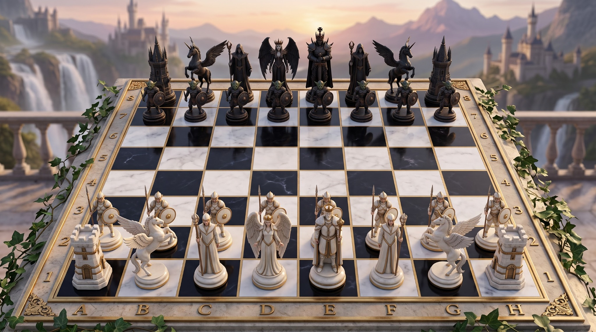

The board will be here when you are.
Ivory to move
Choose a piece. Find your next move.
Two players. One device. All the time you choose.
Minutes per player + seconds added after each move. The clock starts after White’s first move. Starting a game replaces the current board.
Every move, a little history.
Saved on this browser. Clocks continue while the journal is open.
Your clock keeps running until you choose.
A local chess game for two people sharing this screen.
Select one of your pieces, then select a lit square. You can also drag a piece onto its destination. Select it again or press Escape to cancel. Hover over a sculpture to identify it.
Use Tactical view for familiar, clear silhouettes and a square board. Flip the board for the other player, or enable automatic turning in Settings. On a small screen, tactical view opens by default.
Castling, en passant, promotion, check and checkmate are supported. Stalemate, insufficient material, threefold repetition and the fifty-move rule end the game automatically. Takebacks, pauses and agreed draws ask for both players’ agreement. Clocks continue in background tabs and through reloads, unless both players pause.

The supplied 2048 × 1143 reference. The playable scene and sculptures have been recreated from it; they are not pixel-identical.